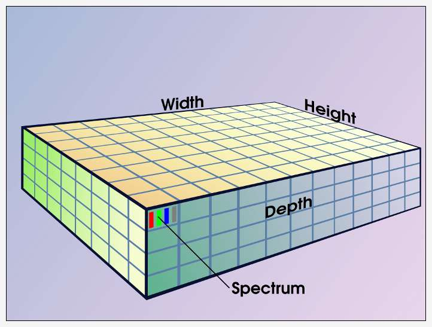

Wherever images come from, G'MIC constructs an internal representation with five attributes: four dimensions and a number format. In principle, these dimensions may have any positive integer measure – millions of pixels and billions of channels, but the amount of memory in your machine sets a practical limit.
Three dimensions are discrete quantities measured in pixels. You are probably familiar with width and height, the rectangular dimensions of an image on a surface. To this G'MIC adds depth, perpendicular to the surface.
With depth, G'MIC images represent volumes, a construct that readily supports tomographic imaging (i.e., 'CATScans'). Video footage also constitutes one 'image' on a G'MIC image list, depth a proxy for time. A one minute NTSC video, 720x480 pixels shot at 29.97 frames per second, becomes a G'MIC image with a depth of 1798 pixels. Increments along the depth axis are often called slices, a frame in the larger context of a video, and a two dimensional section in the larger context of tomographic imaging.
Images are commonly one pixel deep – one slice – but many G'MIC commands will function in the depth direction as well. For example, the '-blur' command will spread a bright pixel in all directions, including neighboring slices. With depth a proxy for time in videos and animation, blur and other depth-aware commands can produce various animation effects.
The fourth G'MIC dimension is 'spectral,' the number of channels an image may have, also a discrete quantity. Commonly, these are the 'red', 'green', 'blue' and 'transparency' components of an image, but G'MIC does not impose this or any other interpretation on the spectral dimension. Particular interpretations arise when images with specific color spaces are input, leading to notions of RGB or CMYK colorspaces, or when particular commands harness specialized images. For example, the '-warp' command employs two channel images called 'displacement fields': one channel represents horizontal displacement at a particular pixel, the other vertical displacement, establishing x and y components of a vector which tells G'MIC how much and in which direction to warp the pixel. In this example the two channels have nothing to do with color. G'MIC's display command happens to render these displacement channels in red and green, but this is by convention only.
The fifth attribute which matters to images is the numeric format of pixel data. In principle, G'MIC calculates with boolean, unsigned and signed character (eight bit integers) signed and unsigned short integers (sixteen bits), unsigned and signed integers (thirty-two bits), thirty-two and sixty-four bit floating point data. Most commands operate on and with thirty-two bit floating point values and at any one time the entire image list is in one numeric format. Newly input images are automatically promoted to the image list's prevailing format without requiring explicit action. This format usually is an accommodating one such as the thirty-two or sixty-four bit floating point formats, to which conversion may occur without much loss.
An awareness of numeric format matters most with the '-output' command, which, by design, will pass image data in the prevailing image list format to some format-specific file writer, and 'the right thing,' whatever that means, probably won't happen.
There are three aspects to this issue: the depth of an image, its numeric format, and the rescaling of its data to an apt range for the file format. The handling the first aspect, image depth, may happen automatically and unobtrusively if the file format accommodates multiple images. Should this not be the case, G'MIC will split an image along the depth dimension into slices and output these as individual images. It is not uncommon to have an '-output' command to foo.png, say, result in a series of numbered files, foo-000000.png, foo-000001.png, ..., one for each slice.
As for the other two aspects, handling number format conversions or data ranges requires more thought and a certain amount of upfront planning. One can kick the issue down the road by employing G'MIC's native .cimg format, which will accommodate images of arbitrary depth, width, height, spectral length and number format. It is not a format many other programs can read, but one may read the .cimg file back into G'MIC later when one becomes ready to choose particular formats. Images as Datasets goes into greater detail, including methods to match the data format and numeric range of images on the pipeline with image file formats.